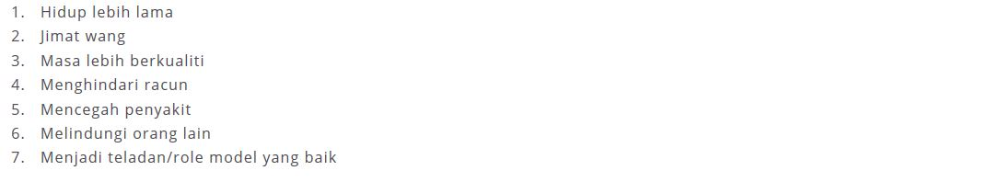

PERSEDIAAN BERHENTI MEROKOK
Sudahkah Anda Bersedia Untuk Berhenti Merokok?
Berhenti merokok merupakan sesuatu perkara yang sukar bagi kebanyakan orang tetapi sebenarnya ia perkara yang terlalu mudah jika tahu formula yang betul. Tidak keterlaluan jika saya katakan yang formula yang saya ajar adalah cara yang paling senang dan telah terbukti berkesan. Jika anda tahu cara ini maka apa guna anda mencuba bermacam–macam cara lagi. Contohnya jika anda diberi soalan matematik 3+3=6. Adakah perlu anda tukar formula (+) kepada (–) atau (X) untuk mendapatkan jawapan =6 itu? Begitu juga formula yang akan diajar ini. Jika itulah cara terbaik untuk berhenti merokok, perlukah anda mencuba teknik–teknik lain yang belum tentu akan berjaya?
Berbagai cara yang ada di dunia untuk berhenti merokok. Ada yang cara yang senang, ada yang susah, ada yang cepat, ada yang lambat, ada cara mengejut dan ada cara yang perlahan–lahan. Mana satu cara patut anda ikut? Katakan anda nak naik gunung, anda ikut orang ramai atau anda ikut orang yang pernah naik beberapa kali dan telah berjaya membawa orang lain naik beberapa kali? Itulah yang kami lakukan. Teknik yang kami ajar telah tebukti membantu ramai perokok berhenti merokok dengan mudah. Terutama selepas terapi kami yang meloyakan tekak mereka dan menyebabkan mereka jadi benci kepada bau asap rokok.Hadiri kursus yang kami anjurkan nanti untuk rasai sendiri bagaimana rasa benci kepada rokok itu.
Persediaan untuk berhenti merokok saya pecahkan kepada 3 peringkat iaitu peringkat awal, peringkat tindakan berhenti dan peringkat berpantang.
-
Peringkat awal.
-
Pasangkan niat untuk berhenti merokok. Setiap amalan bermula dengan niat. Sesuai dengan hadis
Daripada ‘Umar al-Khattab ( r.a ), Rasulullah s.a.w bersabda:
Nak tanya ni…apa niat anda berhenti merokok? Atau anda masih tiada niat. Jika anda memang tiada niat langsung untuk berhenti merokok saya cadangkan agar anda berhenti membaca ebook ini sekarang juga. Ini adalah kerana apa yang akan dikongsikan dalam ayat-ayat selepas ini adalah sesuai untuk perokok yang dah pun pasang niat untuk berhenti merokok. Saya juga hanya dapat bantu orang yang ada niat sahaja. Cuba anda bayangkan apa yang akan berlaku jika seseorang itu tiada niat untuk berubah atau menghijrahkan dirinya tetapi sedang menjalani terapi perubahan diri. Agak-agak dia boleh berubah tak jika dia sendiri tak bersedia untuk berubah? Tak faham? Ok. Saya bagi contoh.“ kuda kita boleh tarik dia ke tepi sungai tapi kita tak boleh paksa dia minum air”. Ha…macam tu la dengan rawatan atau terapi berhenti merokok ni. Jika diri perokok tidak bersedia, datang lah guru dari langit ketujuh sekalipun agak-agak boleh berhenti merokok tak? Niat yang ikhlas untuk berhenti merokok kerana Allah SWT adalah niat yang terbaik sekali.
Saya sendiri telah mencuba untuk berhenti merokok beberapa kali sebelum ini tapi gagal. Tanpa saya sedari telah berhenti merokok sebelum ini dengan berbagai-bagai sebab seperti demi keluarga, demi perkerjaan saya yang terpaksa berhenti merokok kerana berurusan dengan pesakit dan berbagai sebab lagi. Saya telah mencuba berhenti dengan cara berhenti mengejut, menggunakan chewing gum nicorrete (gantian nikotin), menggunakan ubat yang merencat ketagihan iaitu Champix dan akhir sekali bertukar kepada vapor. Semua itu hanya sia–sia sahaja kerana niat saya tidak betul.
Ustaz Don Daniel dalam satu ceramah beliau mengatakan orang yang merokok doanya tidak diterima oleh Allah SWT. Terpaku seketika mendengar ayat itu. Bukan itu sahaja, setelah kita berhenti merokok banyak kesan positif akan hadir dalam hidup kita. Selain doa lebih mustajab, tindakan berhenti merokok juga boleh menjadikan kita lebih mudah untuk bangun pagi, bangun di sepertiga malam untuk bertahajud dan banyak lagi.
Jika sebelum ini niat saya untuk berhenti merokok tidak betul iaitu berhenti kerana ubat, keluarga dan sebagainya, tetapi mulai saat itu saya telah menukar niat untuk berhenti adalah kerana Allah SWT. Saya mahu Allah lebih menyayangi saya. Saya mesti berubah 360 darjah. Saya mesti meminta bantuan dari Allah.
Ubah cara berdoa
Saya tidak berhenti mengejut pada masa itu. Saya masih meneruskan amalan merokok. Mulai saat itu saya ubah cara berdoa. Ini contoh doa yang saya ucap:
“Aku bersyukur pada-Mu Ya Allah kerana telah berhenti merokok “
Sambil menghisap saya membayangkan yang Allah benci amalan menghisap rokok, membayangkan keburukan rokok, membayangkan kebaikan yang saya akan dapat apabila telah berhenti merokok dan juga membayangkan yang saya boleh melakukannya. Orang lain boleh kenapa kita tidak boleh. Semakin hari semakin hilang rasa nikmat pada rokok dan saya dapat rasakan yang tekak rasa sangat perit apabila menghisap rokok. Saya bertekad untuk tidak membebankan dan merosakkan tubuh badan anugerah Allah ini. Akhirnya saya telah berjaya memutuskan bekalan rokok dari mulut saya sehingga ke hari ini. Nota: Di dalam seminar yang saya anjurkan, saya ada ajar cara bagaimana untuk guna kekuatan minda bawah sedar kita. Sebenarnya apa yang berlaku ke atas diri saya di mana saya menjadi perit tekak dan benci merokok kerana saya berjaya menguasai kelebihan minda bawah sedar saya. Tentu anda nak tahu bagaimana untuk kuasai minda bawah sedar itu dan sudah tentu anda sudah tidak sabar untuk hadir seminar yang akan kami anjurkan. Betul? Hanya orang yang pernah rasai bagaimana berada dalam seminar menakjubkan itu sahaja yang dapat faham apa yang saya cerita itu.
Setelah itu saya bertekad untuk membantu seramai mungkin perokok yang ingin berhenti merokok. Dalam masa yang sama saya cuba mempelajari teknik mind programming, hypnotherapy dan lain-lain teknik yang berkaitan cara untuk memberi terapi kepada perokok yang benar-benar ingin berhenti merokok. Alhamdulillah hari demi hari ilmu berkaitan terapi berhenti merokok telah serasi di dalam diri saya sehingga mampu membuat perokok jadi loya dan benci melihat rokok. Ilmu Allah terlalu luas. Apa yang saya tahu hanya secebis dari ilmu–Nya di bumi ini. Dengan harapan agar perkongsian ilmu ini akan menjadi bekalan untuk dibawa menghadap Ya Murabbi apabila sampai waktu dipanggil oleh-Nya nanti.
Sekarang faham ke faham kenapa pentingnya ubah cara berdoa tu? Di sini lah permulaan tercetusnya perubahan minda dari rasa nikmat terhadap rokok menjadi benci terhadap rokok.
Fikir tentang kebaikan berhenti merokok dan keburukan jika masih menghisap rokok
Anda perasan tak yang saya ada cerita tadi mengenai kisah saya sendiri membayangkan kebaikan berhenti merokok dan keburukan apabila masih merokok sedangkan pada masa itu masih lagi merokok. Sebenarnya itu adalah salah satu cara untuk programming minda kita yang rokok ni sebenarnya tak nikmat pun. Mind programming lagi? Ya. Itulah kuncinya. Jika anda hadiri seminar atau terapi face to face bersama saya, anda akan dapat rasai dan faham apa itu mind programming. Nak tahu juga…ok boleh. Tapi saya dapat cerita sedikit saja lah. Ye lah. Mustahil untuk cerita semua benda dalam sebuah ebook ni. Kalau nak faham lebih lanjut tentang mind programming ni sekurang–kurangnya saya perlukan masa 3 hari 2 malam untuk beri kefahaman dan hayati bagaimana keadaannya dan apa yang pembaca akan dapat rasai selepas program. Sanggup ke tak sanggup? Mind programming ni macam ni. Otak kita ni macam komputer. Bukan ke komputer tu boleh didelete dan dimasukkan program baru. Otak kita pun sebenarnya boleh didelete dan dimasukkan program baru. Apa yang saya lakukan kepada perokok yang dah pun berhenti merokok adalah saya hilangkan atau delete rasa nikmat terhadap rokok dan masukkan program baru yang menyebabkan rasa loya dan benci rokok.
Sekarang fikirkan apa kebaikan yang kita dapat apabila berhenti merokok? Cuba senaraikan sendiri dalam kotak di bawah.
Bil Kebaikan Berhenti Merokok(RM) Ok. Saya bagi contoh:
Banyak lagi… nanti dalam seminar saya akan kongsi dan terangkan dengan lebih lanjut.
Sekarang fikir pula keburukan jika masih merokok. Isi dalam kotak di bawah.
Bil Keburukan Jika Masih Merokok(RM) Ini contoh keburukan yang boleh dijadikan panduan.
Dalam masa yang sama cuba kurangkan sedikit demi sedikit jumlah batang rokok yang dihisap.
Peringkat Tindakan Berhenti
Sudah sampai masanya anda mengambil tindakan untuk berhenti merokok sekarang. Ikuti petua ini:
-
Bersihkan dan Sisihkan
Buang semua perkara berkaitan rokok termasuk rokok, ash tray, lighter dan lain-lain barang berkaitan rokok contohnya peralatan rokok elektronik. Buang sahaja. Jangan banyak berfikir. Apa yang saya buat dulu, saya beritahu isteri dan campak di depan dia.
Ayuh Lakukan saja
Saat ini jangan pandang belakang lagi. Jalan terus ke hadapan. Kuatkan semangat. Kuatkan tekad. Bulatkan hati. Jangan dengar suara-suara sekeliling yang mengatakan anda tak sepatutnya berhenti. Jangan dengar suara rakan-rakan yang memperli anda dengan mengatakan “alah sekejap je tu”, “test sebatang je dulu” dan lain‐lain ayat negatif. Biarkan apa orang kata. Anda sudah berada di landasan yang betul. Amalkan petua 12M untuk lebih feel lagi.
Peringkat Berpantang
Peringkat ini adalah tahap akhir untuk anda bergelar sebagai bekas perokok atau ex‐smoker buat selama‐lamanya. Apa yang penting bertindaklah dengan segera dan jangan ditunda‐tunda lagi, sebelum semuanya terlambat. Orang-orang di sekeliling yang menyayangi anda menantikan perubahan besar dalam diri anda. Anda boleh memilih untuk mengamalkan petua 12M atau teknik berhenti dalam 7 hari yang dikongsi dalam ebook ini.
Peringkat berpantang ini amat penting kepada semua perokok yang telah memilih untuk berhenti merokok samada menggunakan petua 12M atau teknik 7 hari. Tempoh untuk berpantang daripada rokok sebenarnya berbeza-beza untuk setiap orang. Secara puratanya adalah 3 minggu. Tetapi jika anda menjalani terapi kami di RKBM Academy tempoh berpantang anda hanya satu minggu sahaja kerana di hari terapi anda akan alami rasa loya dan benci terhadap rokok.
Anda cukup bertuah kerana telah membaca ebook ini sehingga saat ini. Saya akan ajarkan bagaimana untuk menghadapi rasa ketagihan terhadap rokok semasa tempoh berpantang ini. Cuba senaraikan keadaan/situasi yang menyebabkan anda mula merokok dan fikirkan cara untuk mengatasinya mengikut kemampuan anda. Boleh guna contoh seperti di bawah.
Keadaan/Situasi Cara Mengatasi Selepas makan Segera bangkit dari tempat makan, basuh pinggan dan terus gosok gigi Selepas minum kopi Tukar kepada minuman lain yang tidak berkafein seperti koko, air galian dan sebagainya Masa menggunakan komputer Ubah kebiasaan menggunakan komputer ke tempat yang sukar untuk merokok Merasa bosan atau mengantuk Lakukan sesuatu yang boleh menenangkan fikiran seperti ambil wuduk, baca majalah, beriadah, melihat album lama dan sebagainya Perkara yang paling penting semasa tempoh berpantang ini adalah:
- Jauhi mereka yang merokok. Jika mereka yang merokok itu adalah keluarga terdekat anda, jauhi mereka semasa mereka merokok dan ajak mereka untuk berhenti juga. Jika mereka tidak mahu berhenti jangan salahkan diri anda. Biarkan mereka begitu dan beritahu mereka yang anda bersedia membantu bila‐bila masa sahaja jika mereka perlukan bantuan.
- Tekadkan dalam hati yang “Anda tidak akan mulakan walau sebatang atau sesedut pun” kerana kemungkinan untuk menjadi hamba rokok semula adalah sangat tinggi jika anda mulakan dengan hanya sebatang atau sesedut sahaja. Jangan terpengaruh dengan kata‐kata hantu‐hantu rokok yang menyuruh anda mulakan dengan “Alah…satu sedut je pun”. Katakan kepada mereka dengan gembira yang anda tidak perlukan bahan beracun itu lagi.
- Elakkan kawasan yang memudahkan anda merokok
- Jadikan hidup anda lebih aktif dengan selalu bersenam secara berkala iaitu selama 30 minit setiap sessi sekurang‐kurangnya 3 kali seminggu.
- Dekatkan diri dengan Tuhan dengan mengamalkan zikir dan banyakkan solat sunat.
- Elak minuman berkafein seperti kopi dan nescafe.
- Tidur apabila mengantuk. Ambil rehat yang cukup. Kadang‐kadang anda tersilap membuat pilihan di mana anda sebenarnya mengantuk dan badan anda perlukan rehat tetapi anda sangka anda ketagih.
- Makan mengikut sukatan yang betul iaitu mengikut piramid makanan dan tolong makan sehingga kenyang. Kadang‐kadang perut anda lapar tetapi anda tersilap, anda sangka anda ketagih sedangkan anda perlukan makanan. Jangan lupa ambil sayuran hijau dengan banyak. Ambil ulam‐ulaman. Makan buahan sebelum makan nasi.
- Masukkan duit yang biasanya anda beli rokok ke dalam “tabung gantian rokok”. Hadiahkan diri anda sesuatu sebagai galakkan kepada diri dengan duit tabung itu.
- Banyakkan masa bersama keluarga, membantu masyarakat dan membuat sesuatu yang boleh menyebabkan hidup lebih berkualiti dan anda dapat melupakan rokok.
- Hebohkan kepada dunia yang anda bukan lagi perokok untuk menguatkan keyakinan anda. Mungkin anda akan berasa malu untuk memulakan semula tabiat merokok.
- Banyakkan baca al‐Quran
- Banyakkan memberi manfaat kepada orang lain.
- Ajak mereka like page FB: RKBMacademy.
- Kongsikan tips bermanfaat dalam website www.RKBMacademy.com dan www.zakuanlr.com
Berikrarlah kepada diri anda yang walau apa pun terjadi anda tidak akan menyalakan kembali api rokok. Laksanakan ikrar anda dengan tegas dan penuh penghayatan. Usaha yang sungguh‐sungguh disusuli dengan doa yang penuh ikhlas akan menjadikan anda seorang yang bebas rokok buat selama‐lamanya.
Akhir kata, anda sendiri yang menentukan samada berjaya atau tidak sesuatu yang anda usahakan. Kami di RKBM Academy hanya membantu anda berhenti dengan mudah. Kami hanya ibarat menyediakan landasan keretapi. Terpulang kepada anda samada ingin menggunakan landasan itu atau turun dari landasan dan membuat jalan sendiri.
-